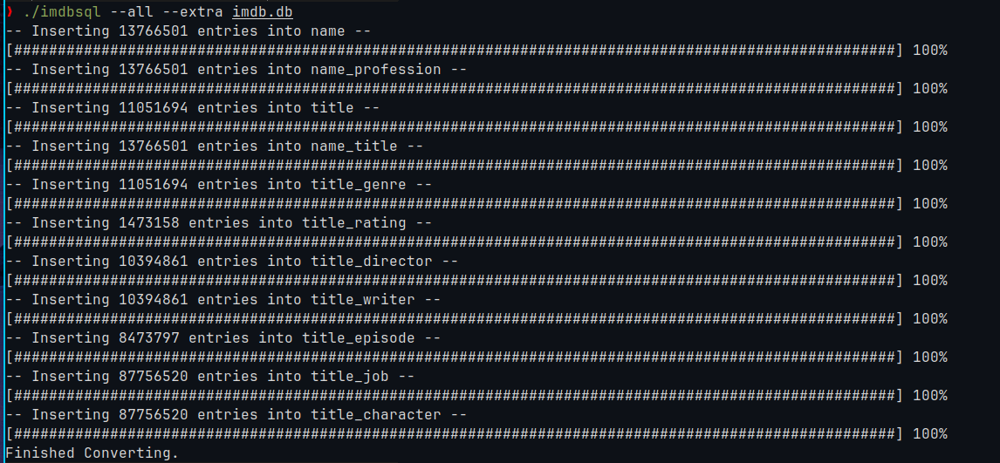
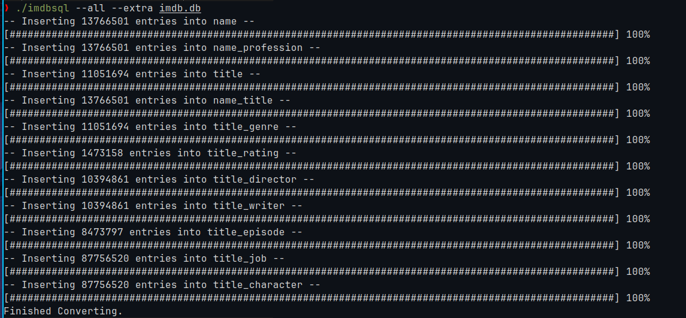

RustIMDb To Sqlite
IMDb To Sqlite Parser
IMDb To Sqlite Parser
Developed a high-performance tool in Rust that converts IMDb Tab Separated Values (TSV) files into SQLite databases with a variety of customizable options. Users can select specific tables to generate from the IMDb dataset based on their needs.
The tool features a dynamic progress bar to track the conversion process in real-time, providing clear feedback on the status of each table being generated. This ensures users can monitor the progress of large dataset conversions efficiently.
Error handling is robust, with configurable flags to log any data insertion errors encountered during the conversion process. This allows users to review issues and ensure data integrity without interrupting the overall conversion workflow.
Written entirely in Rust, the tool leverages the language’s speed and memory safety to handle large IMDb datasets efficiently while maintaining high reliability during the conversion process. It is designed to handle both full and partial IMDb datasets, providing flexibility depending on the user's specific use case.
With its comprehensive table generation options, progress tracking, and error logging, this tool streamlines the process of converting IMDb TSV files into an easy-to-query SQLite database, making it suitable for education and personal use alike.
In addition to its core functionality, the tool is well-documented and optimized for ease of use, making it a valuable asset for anyone working with IMDb data in a SQLite environment.